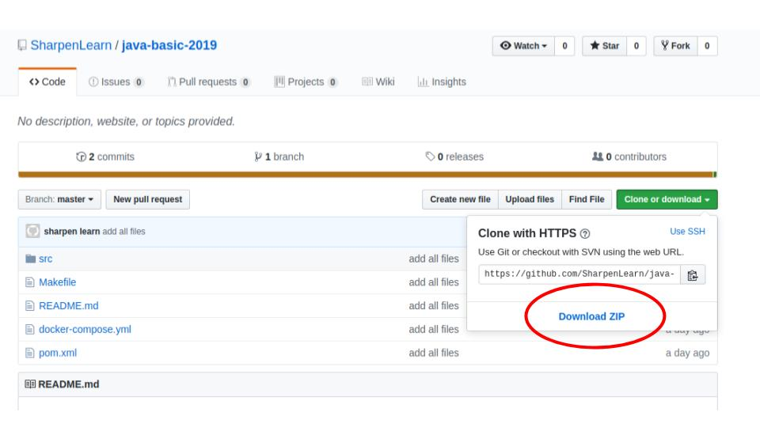
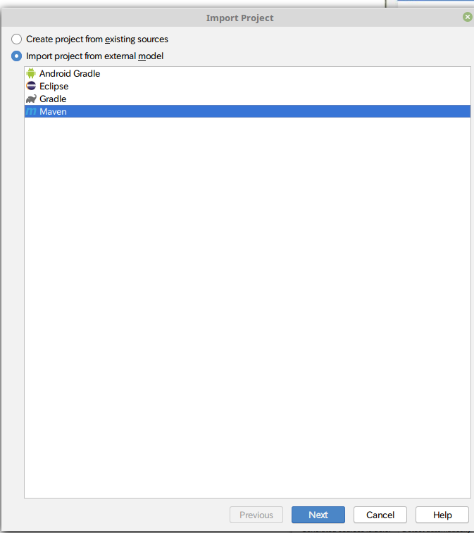
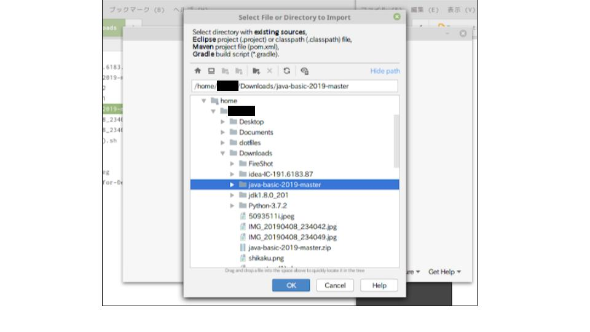
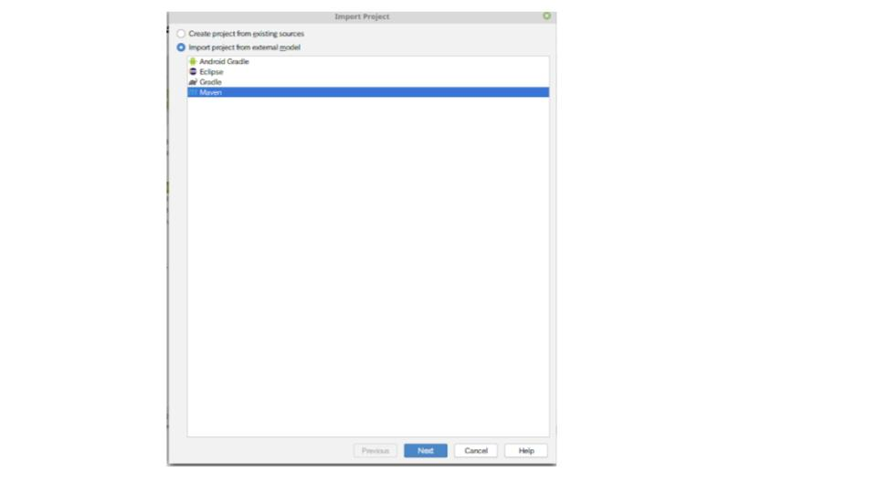
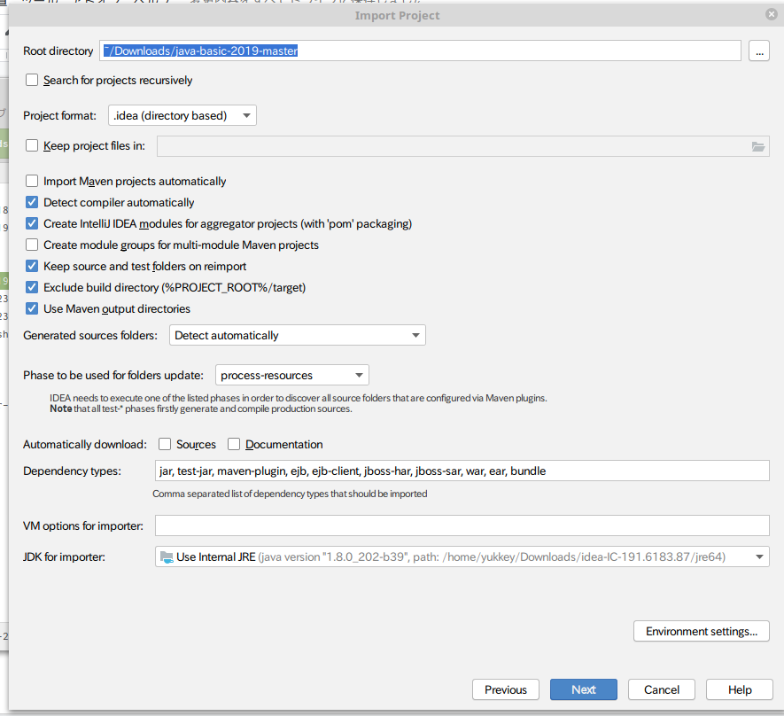
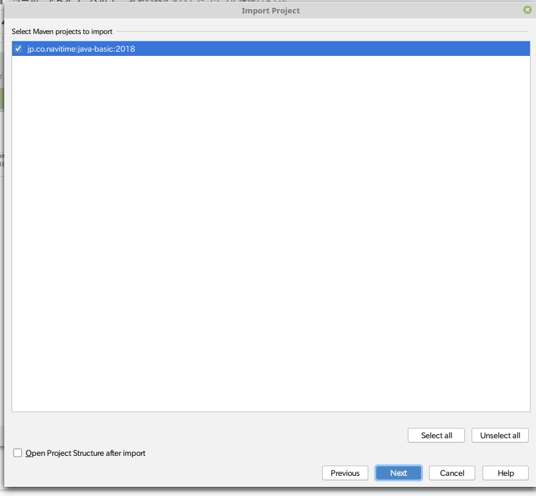
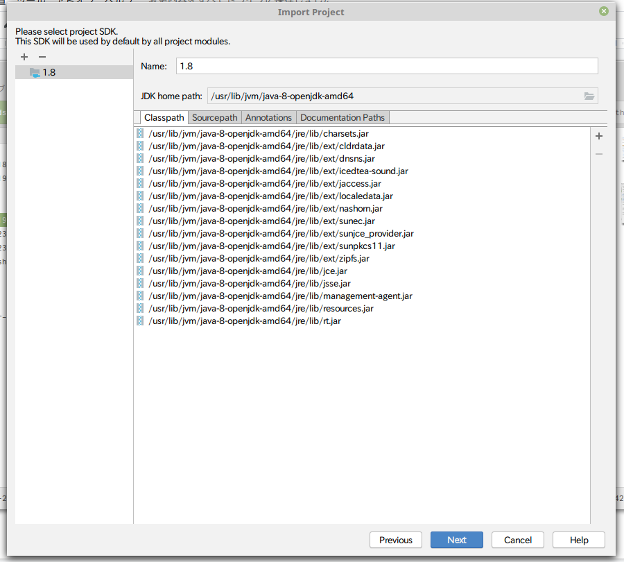
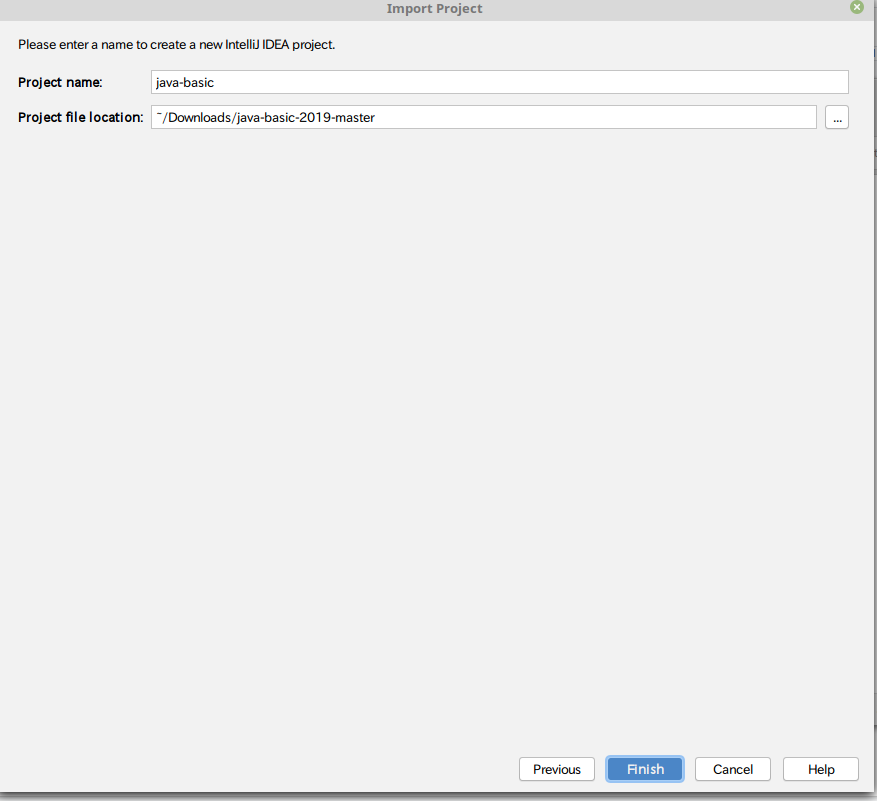

<!DOCTYPE html>
<html>
<head><meta name="generator" content="Hexo 3.8.0">
  <meta charset="utf-8">
  
  <title>Java準備マニュアル | タイトルはおいおい</title>
  <meta name="viewport" content="width=device-width">
  <meta name="description" content="はじめに 忙しい人向け 準備編 JDKのインストール IntelliJのインストール   課題のDL 前書き 本編   IntelliJにimport おまけ(Git編)   はじめに某社の研修生向けの記事です。リポジトリはpublicなので自分の学習がてら、記事化してみました。(コンプラ的にセーフなはず) 強い人は編集手伝ってください 一応知識0からでも準備を整えれるような文章で書いてるつも">
<meta property="og:type" content="article">
<meta property="og:title" content="Java準備マニュアル">
<meta property="og:url" content="https://0yukkey0.github.io/2019/04/14/Java準備マニュアル/index.html">
<meta property="og:site_name" content="タイトルはおいおい">
<meta property="og:description" content="はじめに 忙しい人向け 準備編 JDKのインストール IntelliJのインストール   課題のDL 前書き 本編   IntelliJにimport おまけ(Git編)   はじめに某社の研修生向けの記事です。リポジトリはpublicなので自分の学習がてら、記事化してみました。(コンプラ的にセーフなはず) 強い人は編集手伝ってください 一応知識0からでも準備を整えれるような文章で書いてるつも">
<meta property="og:locale" content="ja">
<meta property="og:image" content="https://0yukkey0.github.io/images/manual/1.jpg">
<meta property="og:image" content="https://0yukkey0.github.io/images/manual/2.jpg">
<meta property="og:image" content="https://0yukkey0.github.io/images/manual/3.png">
<meta property="og:image" content="https://0yukkey0.github.io/images/manual/4.jpg">
<meta property="og:image" content="https://0yukkey0.github.io/images/manual/5.jpg">
<meta property="og:image" content="https://0yukkey0.github.io/images/manual/6.png">
<meta property="og:image" content="https://0yukkey0.github.io/images/manual/7.png">
<meta property="og:image" content="https://0yukkey0.github.io/images/manual/8.png">
<meta property="og:image" content="https://0yukkey0.github.io/images/manual/9.png">
<meta property="og:updated_time" content="2019-04-14T02:04:59.088Z">
<meta name="twitter:card" content="summary">
<meta name="twitter:title" content="Java準備マニュアル">
<meta name="twitter:description" content="はじめに 忙しい人向け 準備編 JDKのインストール IntelliJのインストール   課題のDL 前書き 本編   IntelliJにimport おまけ(Git編)   はじめに某社の研修生向けの記事です。リポジトリはpublicなので自分の学習がてら、記事化してみました。(コンプラ的にセーフなはず) 強い人は編集手伝ってください 一応知識0からでも準備を整えれるような文章で書いてるつも">
<meta name="twitter:image" content="https://0yukkey0.github.io/images/manual/1.jpg">
  
    <link rel="alternative" href="/atom.xml" title="タイトルはおいおい" type="application/atom+xml">
  
  
    <link rel="icon" href="/favicon.png">
  
  <link rel="stylesheet" href="/css/style.css">
  <!--[if lt IE 9]><script src="//html5shiv.googlecode.com/svn/trunk/html5.js"></script><![endif]-->
  
</head></html>
<body>
  <div id="container">
    <div class="mobile-nav-panel">
	<i class="icon-reorder icon-large"></i>
</div>
<header id="header">
	<h1 class="blog-title">
		<a href="/">タイトルはおいおい</a>
	</h1>
	<nav class="nav">
		<ul>
			<li><a href="/">Home</a></li><li><a href="/archives">Archives</a></li>
			<li><a id="nav-search-btn" class="nav-icon" title="Search"></a></li>
			<li><a href="/atom.xml" id="nav-rss-link" class="nav-icon" title="RSS Feed"></a></li>
		</ul>
	</nav>
	<div id="search-form-wrap">
		<form action="//google.com/search" method="get" accept-charset="UTF-8" class="search-form"><input type="search" name="q" class="search-form-input" placeholder="Search"><button type="submit" class="search-form-submit">&#xF002;</button><input type="hidden" name="sitesearch" value="https://0yukkey0.github.io"></form>
	</div>
</header>
    <div id="main">
      <article id="github-Java準備マニュアル" class="post">
	<footer class="entry-meta-header">
		<span class="meta-elements date">
			<a href="/2019/04/14/Java準備マニュアル/" class="article-date">
  <time datetime="2019-04-14T02:04:59.081Z" itemprop="datePublished">2019-04-14</time>
</a>
		</span>
		<span class="meta-elements author">よっしー</span>
		<div class="commentscount">
			
		</div>
	</footer>
	
	<header class="entry-header">
		
  
    <h1 class="article-title entry-title" itemprop="name">
      Java準備マニュアル
    </h1>
  

	</header>
	<div class="entry-content">
		
    	<!-- toc -->
<ul>
<li><a href="#はじめに">はじめに</a></li>
<li><a href="#忙しい人向け">忙しい人向け</a></li>
<li><a href="#準備編">準備編</a><ul>
<li><a href="#jdkのインストール">JDKのインストール</a></li>
<li><a href="#intellijのインストール">IntelliJのインストール</a></li>
</ul>
</li>
<li><a href="#課題のdl">課題のDL</a><ul>
<li><a href="#前書き">前書き</a></li>
<li><a href="#本編">本編</a></li>
</ul>
</li>
<li><a href="#intellijにimport">IntelliJにimport</a></li>
<li><a href="#おまけgit編">おまけ(Git編)</a></li>
</ul>
<!-- tocstop -->
<h2><span id="はじめに">はじめに</span></h2><p>某社の研修生向けの記事です。リポジトリはpublicなので自分の学習がてら、記事化してみました。(コンプラ的にセーフなはず)</p>
<p><strong>強い人は編集手伝ってください</strong></p>
<p>一応知識0からでも準備を整えれるような文章で書いてるつもりです。わざわざ回りくどい説明になっているので、そこだけご了承お願いします。</p>
<p><del>体力とモチベがあれば第2弾、第3弾もあるかも？</del></p>
<h2><span id="忙しい人向け">忙しい人向け</span></h2><p><a href="https://github.com/SharpenLearn/java-basic-2019.git" target="_blank" rel="noopener">https://github.com/SharpenLearn/java-basic-2019.git</a></p>
<p>このリンクだけが欲しいんでしょ？</p>
<h2><span id="準備編">準備編</span></h2><h3><span id="jdkのインストール">JDKのインストール</span></h3><p>講義と同じJDKをDLします</p>
<p><a href="http://rd.nan7.net/https://d2znqt9b1bc64u.cloudfront.net/amazon-corretto-8.202.08.2-windows-x86.msi" target="_blank" rel="noopener">Windows版</a></p>
<p><a href="http://rd.nan7.net/https://d2znqt9b1bc64u.cloudfront.net/amazon-corretto-8.202.08.2-macosx-x64.pkg" target="_blank" rel="noopener">Mac版</a></p>
<p>DLしたら必ずインストールまでやってください</p>
<h3><span id="intellijのインストール">IntelliJのインストール</span></h3><p>まずはDLお願いします。</p>
<p><a href="https://download.jetbrains.com/idea/ideaIC-2019.1.exe" target="_blank" rel="noopener">Windows版</a></p>
<p><a href="https://download.jetbrains.com/idea/ideaIC-2019.1.dmg" target="_blank" rel="noopener">Mac版</a></p>
<p>DL後初回起動</p>
<ol>
<li>設定をimportするかどうか：NO</li>
<li>チェックボックスにチェックを入れContinue</li>
<li>DataSharingはDon’t send</li>
<li>これでIntelliJが起動される</li>
</ol>
<p>起動したら一旦、IntelliJは放置</p>
<h2><span id="課題のdl">課題のDL</span></h2><h3><span id="前書き">前書き</span></h3><figure class="highlight bash"><table><tr><td class="gutter"><pre><span class="line">1</span><br></pre></td><td class="code"><pre><span class="line">$ git <span class="built_in">clone</span> https://github.com/SharpenLearn/java-basic-2019.git</span><br></pre></td></tr></table></figure>
<p>本来だったらForkしてCloneしてましたが、<br>家でやるときでは</p>
<figure class="highlight bash"><table><tr><td class="gutter"><pre><span class="line">1</span><br><span class="line">2</span><br><span class="line">3</span><br></pre></td><td class="code"><pre><span class="line">$ git add ./xxx/xxx/xxx.java</span><br><span class="line">$ git commit -m <span class="string">"test message"</span></span><br><span class="line">$ git push</span><br></pre></td></tr></table></figure>
<p>研修みたいな流れでpushまですると事故る可能性があるので直接DLしてください。<br>(厳密にはpushできないのでz事故らないが、余計なエラー防止のため)</p>
<p>前書きは以上で、方法は以下に書いていきます。</p>
<h3><span id="本編">本編</span></h3><p>ブラウザで課題が上がっているリポジトリを開く<br><a href="https://github.com/SharpenLearn/java-basic-2019" target="_blank" rel="noopener">https://github.com/SharpenLearn/java-basic-2019</a></p>
<p>リポジトリが開けたら下の画像のように <code>Clone or download</code>をクリック</p>
<p></p>
<p> <code>Download ZIP</code>をクリックしてZIP形式でDLする</p>
<p></p>
<p>その後は各自の端末でZIPファイルを解凍する</p>
<h2><span id="intellijにimport">IntelliJにimport</span></h2><p>放置していたIntelliJに戻って</p>
<p></p>
<p>Import Projectをクリック</p>
<p></p>
<p>DLした課題ディレクトリを指定してOKをクリック</p>
<p>私の場合 <code>/home/userName/Downloads/java-basic-2019-master</code> でした。</p>
<p></p>
<p>Import project from external modelにチェック<br>Mavenを選択してNext</p>
<p><br>次は特に触らずそのままNext</p>
<p><br>特に触らずそのままNext</p>
<p></p>
<p>JDKがちゃんとインストールされていたら特に問題ないはず。ここの失敗例がわからないので個別対応かも？</p>
<p>複数あるなら1.8ってあるかJDK home pathにjava-8-openjdkってあれば多分それ</p>
<p></p>
<p>Finishをクリックしたら完了です！</p>
<p>これで課題をやるだけなら、自分のPCでもできます。</p>
<h2><span id="おまけgit編">おまけ(Git編)</span></h2><p>はまた今度</p>
<p>ps:ここまで書いてで力尽きたので強い人マークダウンで原稿ください。<br>もしくはフォークしてプルリク投げにきてください。</p>

    
	</div>
	<footer class="entry-footer">
		<div class="entry-meta-footer">
			<span class="category">
				
			</span>
			<span class="tags">
				
			</span>
		</div>
	</footer>
	
    
<nav id="article-nav">
  
  
    <a href="/2019/04/13/pagesにhexoで作ったページを公開する方法/" id="article-nav-older" class="article-nav-link-wrap">
      <strong class="article-nav-caption">Older</strong>
      <div class="article-nav-title">
        
          pagesにhexoで作ったページを公開する方法
        
      </div>
    </a>
  
</nav>

  
</article>


    </div>
    <div class="mb-search">
  <form action="//google.com/search" method="get" accept-charset="utf-8">
    <input type="search" name="q" results="0" placeholder="Search">
    <input type="hidden" name="q" value="site:0yukkey0.github.io">
  </form>
</div>
<footer id="footer">
	<h1 class="footer-blog-title">
		<a href="/">タイトルはおいおい</a>
	</h1>
	<span class="copyright">
		&copy; 2019 よっしー<br>
		Modify from <a href="http://sanographix.github.io/tumblr/apollo/" target="_blank">Apollo</a> theme, designed by <a href="http://www.sanographix.net/" target="_blank">SANOGRAPHIX.NET</a><br>
		Powered by <a href="http://hexo.io/" target="_blank">Hexo</a>
	</span>
</footer>
    

<script src="//ajax.googleapis.com/ajax/libs/jquery/2.0.3/jquery.min.js"></script>


<link rel="stylesheet" href="/fancybox/jquery.fancybox.css" media="screen" type="text/css">
<script src="/fancybox/jquery.fancybox.pack.js"></script>


<script src="/js/script.js"></script>
  </div>
</body>
</html>